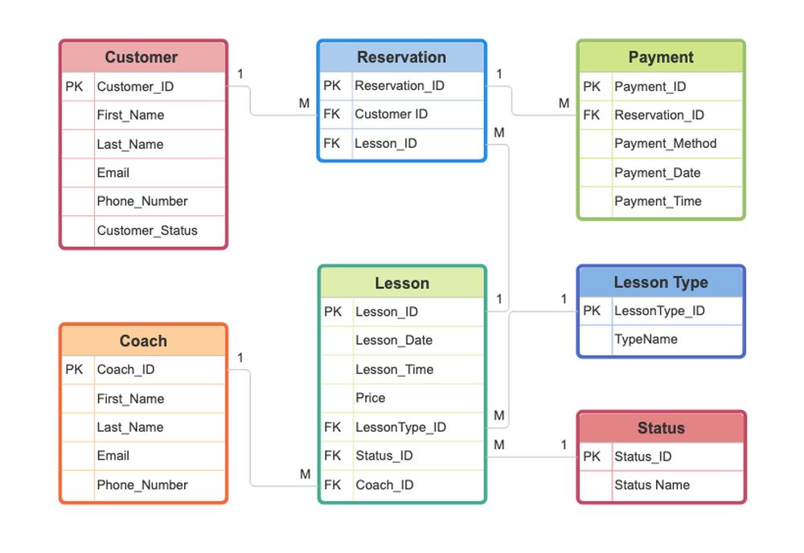
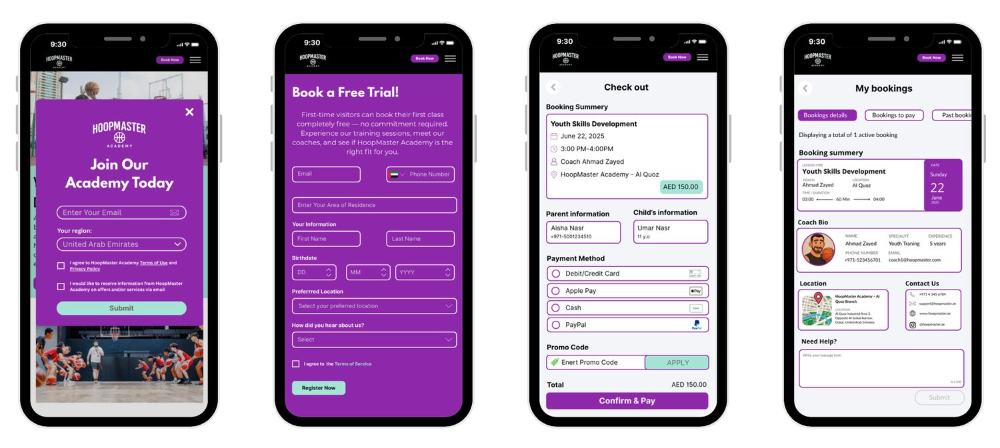
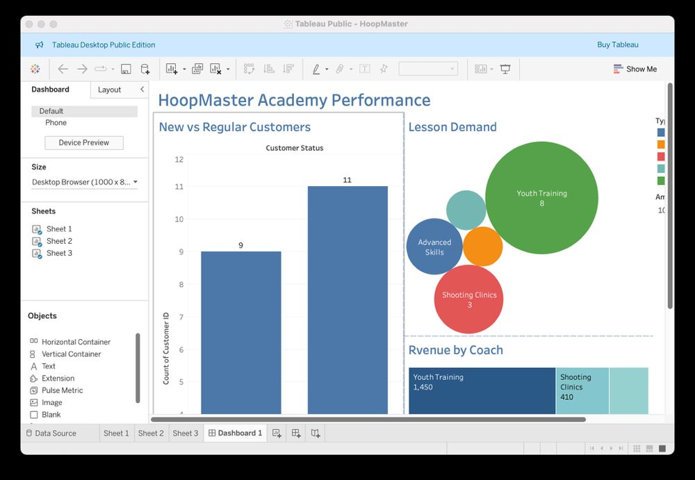
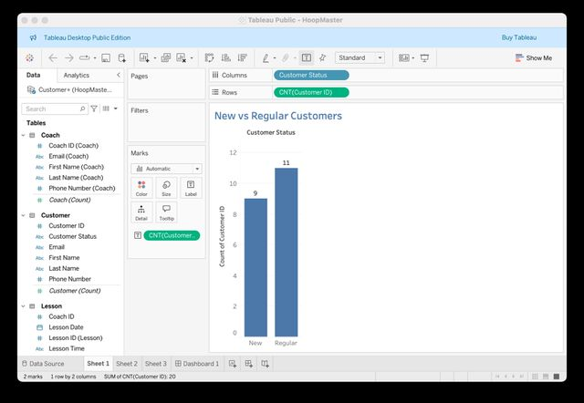
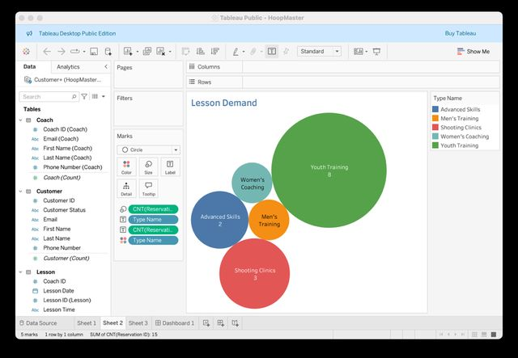
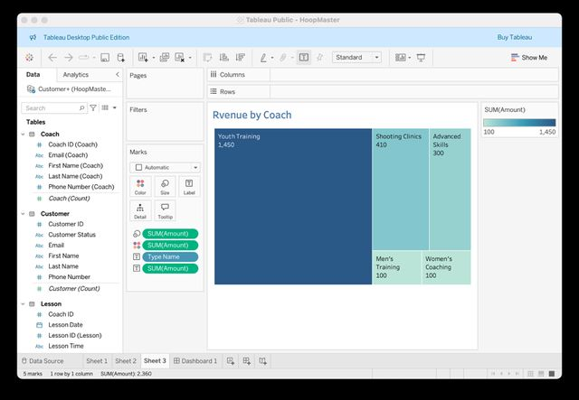

Selected work / Analytics and systems
HoopMaster Academy: a booking and reporting system
A database, SQL and Tableau design for HoopMaster Academy, a youth basketball academy concept our group created.
My role
I was the team leader and organiser throughout the project, coordinating the work. I was responsible for the SQL work, the tables, the Excel work, the Canva design and the interface design.
Teammates built the remaining parts of the project.
The system
The design has seven linked tables: Customer, Coach, Lesson, Lesson Type, Status, Reservation and Payment. Customers book lessons with coaches through reservations, and payments attach to each reservation.
I was responsible for the SQL, which creates, adds, updates, deletes and queries records in four of the tables.

Interface concepts
Four mobile screens for the member side of the system: a join pop-up, a free-trial sign-up form, checkout and a "My bookings" page.

What is mine and what is not: the screen layouts, flow and form design are my own work. The HoopMaster concept, name, logo and imagery were created by our group for this project.
Dashboard
Tableau views built from the sample dataset. They show how the system could report, not real business results.




What this shows
Skills used: database design, working with data in Excel and Tableau, and organising a team through a technical project. It supports my marketing work with data skills and is not my main focus.
This project helped me understand how information systems can support the day-to-day operations of a business by organizing information and making it easier to manage customers, bookings, lessons, and payments. Working on the database and SQL queries gave me practical experience in structuring data and retrieving or modifying records to meet business requirements. The project also showed me how database design and reporting can work together to turn operational information into something more useful for decision-making. It strengthened my understanding of the relationship between business needs and the technical systems designed to support them.